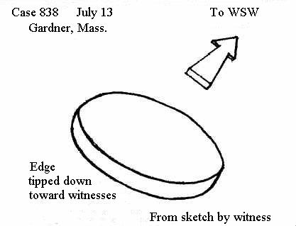

Hommes d'affaires (Types de témoins particuliers, Rapport sur la vague d'ovnis de 1947)
Cas 259 - 4 juillet, Akron (Ohio)
2 responsables de la société B. F. Goodrich rapportèrent qu'eux et leurs familles avaient vu un objet
argenté rond vers 20 h 30 (EST). Le Dr. et Mme Forrest Shaver, de 824 Crestview Avenue, had been motoring
with Mr. and Mrs. Harry Hoertz, of 489 Orchard Street. At the Shaver home, following the drive, an object was
spotted flying in an easterly direction by two-year-old Elizabeth Shaver, who called it to the attention of the
others. Dr. Shaver said that the object "looked like a balloon with a light inside
," and Mr. Hoertz described
it as "a light with a propelling device
," although this "propelling device" is not described in the report.
Cas 309 - 5 juillet, Dana Point (Californie)
John R. Street of Los Angeles, an insurance company executive, was spending the holiday weekend at Dana Point. At
8:30 a.m. PST on the 5th, he and his wife were sightseeing at San Juan Capistrano Mission when they saw 2 "saucer-like
"
objects "flying slowly up the canyon
" toward the Mission, in a northerly direction. "The strange objects
seemed to genuflect before vanishing into the distance
," Street said. "It gave us an eerie feeling
."
10 mn plus tard, 2 objets à l'apparence de disques furent vus about 50 miles north northwest of Dana Point, at
Eagle Rock, in northeast Los Angeles (Case 310). While it is possible that the objects may have been the same ones
seen earlier by the Streets, there are too few details, as usual, to make any definite connection.
Cas 341 - 5 juillet, Allegan (Michigan)
Dan Conroy, who identified himself as manager of the J. C. Penney store in Allegan in his report to the Grand Rapids Herald (7/7), said that a party of 27 persons, including himself, had seen a
large group of disc-like objects flying overhead while at a bridge club dinner at Lake Allegan during the evening.
Conroy said that the objects were flying over at a “very high
”
altitude, going from east to west, and were silver in color. They appeared to be about 25 feet in diameter, he said,
and while he counted 18 objects in all, others in the party said that they had counted as many as 21.
Cas 838 – 13 juillet, Gardner, (Massachusetts)

Warren Baker Eames, Harvard graduate and president of an interior design company, was driving with his wife west on
Route 2 near Gardner at 5:48 p.m. EDT when he saw a large, disc-shaped object in the sky ahead. It appeared to be
moving in the same direction as the witnesses, and resembled a silver dollar both in shape and color. As Eames
watched, the edge of the disc closest to them abruptly dipped down toward them and the object accelerated with a
sudden burst of speed, going away from the observers toward the west northwest. When it dipped, Eames reported, "I
could see the edge very clearly
."